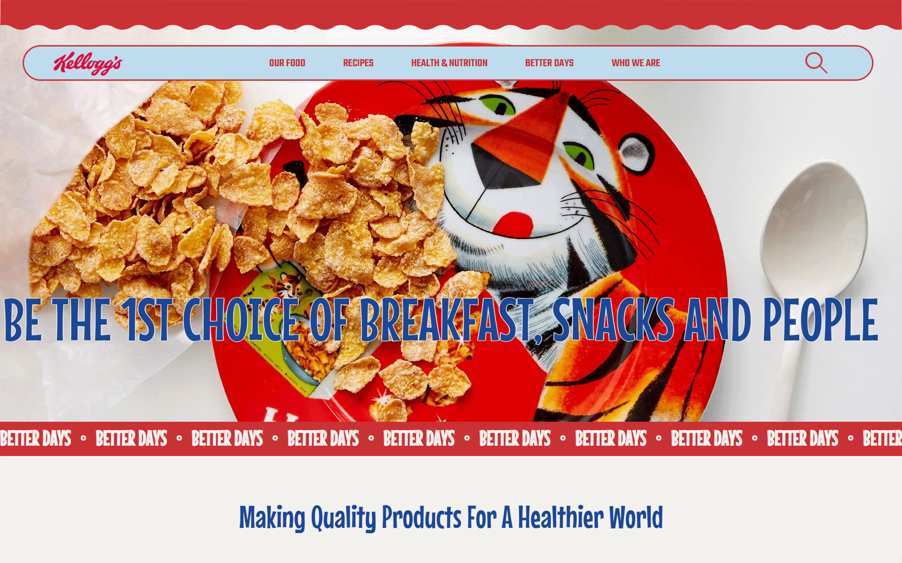

KELLOGG
웹사이트 리디자인
2022.08.16 ~ 2022.08.23
개인 작업 (100%)
- #Web
- #HTML5
- #CSS3
- #JavaScript
- #Redesign

웹사이트 리디자인
2022.08.16 ~ 2022.08.23
개인 작업 (100%)


주로 제품 및 홍보 이미지들의 일반적인 나열로 구성되어 있는 기존의 웹사이트를, 좀 더 켈로그 자체의 이미지를 드러낼 수 있는 디자인으로 리디자인 한다.

100%
Role : 리디자인 & 퍼블리싱
켈로그의 특징적인 모양을 사용했으나, 메뉴 내의 컨텐츠에 비해 큰 면적을 차지하고 있었다.
모든 페이지가 일반적인 제품 나열방식의 동일한 구성으로 되어있어 다소 단조롭게 느껴진다.
메인페이지에서 큰 면적을 차지하고 있는 이미지인데도 심하게 깨져있는 이미지들이 많이 있었다.
메뉴 내용이 많지 않은 것을 감안하여, 보다 페이지 이동에 집중된 간결한 구성으로 만든다.
메인 페이지 내의 각 콘텐츠 별 특징에 따른 다양한 구성으로, 사용자가 봤을때 보다 흥미롭게 한다.
선명한 이미지와 영상으로 사용자가 정확히 인지할 수 있도록 한다.
중간 Better Days 배너 부분의 마우스 좌표를 이용한 움직임을 만드는 것에 어려움이 있었다. 지정된 위치에서 원하는대로 움직이지 않는 바람에 정말 여러번 시도끝에 결과가 나왔던 것같다.
그리고 모니터 크기가 다르면 콘텐츠의 위치가 어긋나는 문제도 계속 발생하여 css를 여러번 다시 재정비 해야했다. 한 파트의 위치를 건드리면 다른 파트 위치가 깨지고, 다른거 건드리면 또 어긋나는게 반복되다보니 결국엔 css 백지에서 이전 css와 비교하며 전체적으로 다시 할 수 밖에 없었다.
clientX, scrollY등과 같은 javascript를 사용하는게 수월하지 않아서 예제들을 다시 찾아보거나 구글링을 통해서 이해해보려고 노력했다.
그리고 콘텐츠 위치 문제를 해결하기위해 노트북과 pc를 함께 병행하여 동시에 보면서 수정했는데, 이 과정에서 무의미한 position사용이 너무 많아 콘텐츠들이 계속 어긋나게 되었다는 걸 알게 되었다.
켈로그 사이트를 디자인 하면서, 켈로그 자체의 이미지가 더 잘 느껴지는 디자인이 되었으면 좋겠다고 생각했다. 그래서 일러스트 사용이나 애니메이션 효과 등을 적극 사용했다.
또한 여태까지 배웠던 여러 움직이는 효과들을 써 볼 수있는 좋은 프로젝트라고 생각해서 디자인 할 때도 퍼블리싱할 거 생각하면서 즐겁게 했었다.
다만 실제로 해보니 생각했던 것 보다 해당 코딩에 대한 나의 이해도가 부족했고, 알고 있다고 생각했던것도 사실은 아는 것이 아니었던 것 같다.
하지만 이를 통해 배운 것을 다시한번 짚고 넘어갈 수 있었고, 모르거나 이해 안되는 부분을 다시 찾아보고 질문하면서 다시 공부할 수 있는 좋은 기회였다고 생각 한다.